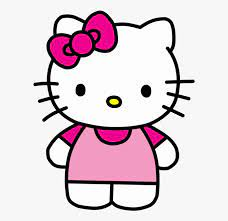

Hello Kitty (ハロー・キティ Harō Kiti),também conhecida por seu nome completo Kitty White キティ・ホワイト.
A Hello Kitty originalmente foi criada pela designer da sanrio, Yuko Shimizumi, em 1974.
Shimizu deixou a companhia aproximadamente um ano depois. A segunda designer, Setsuko Yonekubo, assumiu por cinco anos até 1980, quando essa tarefa foi dada a Yuko Yamaguchi, que ainda está à frente do trabalho.
A Sanrio decidiu fazer Hello Kitty britânica porque, na época de sua criação, os países estrangeiros, em particular a Grã-Bretanha, eram modernos no Japão.A Sanrio já tinha vários personagens ambientados nos EUA e queria que a Hello Kitty fosse diferente.
O nome Kitty veio de um dos gatos que a personagem Alice criava no livro Through the Looking Glass de Lewis Carroll. O lema da Sanrio é "comunicação social" e Tsuji queria que o nome da marca refletisse isso. Ele primeiro considerou "Hi Kitty" antes de decidir-se por "Hello" como saudação.
A primeira aparição da personagem foi em uma bolsa de moedas de vinil no Japão, onde ela foi retratada sentada entre uma garrafa de leite em um aquário.
top 3 personagens mais adorados em hello kiity
Porta-vozes da Sanrio disseram que a Hello Kitty não tem boca, pois querem que as pessoas "projetem seus sentimentos no personagem" e "fiquem felizes ou tristes junto com a Hello Kitty." Outra explicação que a Sanrio deu para sua falta de boca é que ela "fala com o coração. Ela é a embaixadora da Sanrio para o mundo e não está presa a nenhum idioma específico".
Hello Kitty vendeu bem imediatamente após o lançamento de 1974, e as vendas da Sanrio aumentaram sete vezes até cair temporariamente em 1978. Novas séries com Hello Kitty em designs temáticos diferentes são lançadas regularmente, seguindo as tendências atuais. Yuko Yamaguchi, a principal designer da maior parte da história da Hello Kitty, disse que moda, filmes e TV a inspiram na criação de novos designs.
Hello Kitty foi originalmente comercializado apenas para um público infantil e pré-adolescente. Na década de 1990, o mercado-alvo da Hello Kitty foi ampliado para incluir adolescentes e adultos como uma marca retrô. Comercializado para aqueles que não podiam obter mercadorias da Hello Kitty quando crianças, ou que lembram com carinho dos itens que possuíam, a Sanrio começou a vender produtos da marca Hello Kitty, como bolsas e laptops. A série Face 1994-1996 foi a primeira a ser projetada para um apelo mais maduro.
De acordo com a Sanrio, em 1999, a Hello Kitty apareceu em 12.000 produtos diferentes anualmente. Em 2008, a Hello Kitty era responsável por metade da receita líquida de $ 1 bilhão da Sanrio, e havia mais de 50.000 produtos diferentes da marca Hello Kitty em mais de 60 países. Começando em 2007, seguindo as tendências no Japão, a Sanrio começou a usar designs mais escuros para a Hello Kitty com mais preto e menos rosa, se afastando dos estilos kawaii.
Hello Kitty e Mimmy celebraram seu 40º aniversário em 1º de novembro de 2014. A celebração ("ARIGATO EVERYONE! Birthday Celebration") aconteceu no parque temático, Sanrio Puroland, em Tóquio por vários dias.
Em 1º de janeiro de 2020, a Sanrio Hello Kitty Town em Iskandar Puteri, Malásia fechou definitivamente devido à falta de visitantes.
Em 21 de fevereiro de 2020, o parque temático Sanrio Puroland em Tóquio foi fechado temporariamente devido à pandemia COVID-19.
Em junho de 2020, a Sanrio divulgou uma declaração de que seu fundador, Shintaro Tsuji,de 92 anos, se aposentaria como presidente-executivo da Sanrio no dia 1º de julho, e seu neto, Tomokuni Tsuji, de 31 anos, assumiria o cargo.
Produtos
Voltada originalmente para o mercado feminino pré-adolescente, a linha de produtos da Hello Kitty se expandiu de bonecas, adesivos, cartões comemorativos, roupas, acessórios, material escolar e papelaria para bolsas, torradeiras, televisores, outros eletrodomésticos, massageadores e equipamentos de informática. Esses produtos variam de itens de mercado de massa a produtos de consumo sofisticados e colecionáveis raros.
Em 2014, mais de 50.000 linhas de produtos Hello Kitty estavam disponíveis em mais de 130 países.
A Sanrio e vários parceiros corporativos lançaram produtos da marca Hello Kitty, incluindo a guitarra elétrica Hello Kitty Stratocaster (desde 2006, com a Fender nos EUA)[
A Sanrio também colaborou com muitas marcas em coleções de jóias da Hello Kitty,como a Simmons Jewelry Co. em 2005 e 2008.
Em 2009, a Hello Kitty entrou no mercado vinícola com uma coleção de quatro vinhos disponíveis para compra online, dando continuidade à expansão de produtos direcionados a públicos mais velhos.
A Fender Musical Instruments Inc. fez uma parceria com a Hello Kitty para criar a Hello Kitty Stratocaster. Embora inicialmente destinada a meninas pré-adolescentes, a Hello Kitty Stratocaster provou seu valor nas mãos de guitarristas, incluindo strZakk Wylde, John5 e Slash.
A Hello Kitty nasceu em pequenos artigos para garotas e consequentemente se desenvolveu também da mesma forma. A Sanrio lança todos os anos uma série de artigos com a Hello Kitty,incluindo bolsas, cadernos, agendas, fichários, bijuterias, adesivos, (auto-colantes), chaveiros e muito mais
A primeira série animada da Hello Kitty foi produzida em 1986 e se chamava Hello Kitty's Furry Tale Theatre, com 13 episódios. Na série, produzida pela extinta DiC Entertainment e animada pela Toei Animation, envolvia Hello Kitty e seus amigos fazendo suas próprias versões de contos de fadas populares.[34][35] A próxima série animada foi um OVA intitulado Hello Kitty and Friends, lançado em 1993, também com 13 episódios. Hello Kitty's Paradise foi lançado em 1999 e tinha 16 episódios. Hello Kitty's Stump Village foi lançado em 2005, e The Adventures of Hello Kitty & Friends foi lançado em 2006 e já foi ao ar 52 episódios. Uma série crossover com o nome Kiss Hello Kitty (com versões animadas dos membros da banda de rock Kiss com a Hello Kitty) foi anunciada em março de 2013,mas nunca foi lançada. A primeira aparição de Hello Kitty no universo 3D foi em The Adventures of Hello Kitty & Friends. Em 2016, a Hello Kitty ganhou sua primeira animação brasileira para youtube chamada O Mundo da Hello Kitty.
Em agosto de 2018, a Sanrio começou a transmitir uma série de animação CGI no YouTube. Mostra Hello Kitty falando para a câmera sobre sua vida no estilo de vlogging de YouTubers virtuais.
Sanrio irá transmitir uma série animada 2D em inglês chamada Hello Kitty and Friends Supercute Adventures no str no YouTube dia 26 de outubro de 2020.
Vários jogos da Hello Kitty foram produzidos desde o lançamento do primeiro título para NES em 1992; entretanto, a maioria desses jogos nunca foi lançada fora do Japão. Hello Kitty também fez participações especiais em jogos com outros personagens da Sanrio, como o jogo Kero Kero Keroppi no Bōken Nikki: Nemureru Mori no Keroleen, lançado em 1994 para SNES.
Foram lançados também consoles de edição especial, como o Hello Kitty Dreamcast, o Hello Kitty Game Boy Pocket e o Hello Kitty Crystal Xbox, vendidos exclusivamente no Japão. Hello Kitty também apareceu como personagem convidada no jogo Sonic Dash, como parte da parceria da Sega com a Sanrio.Hello Kitty (assim como My Melody, outra personagem da Sanrio) também apareceu em Super Mario Maker.A Sanrio Digital lançou em 2009o MMORPG gratuito Hello Kitty Online,que permite que os jogadores criem e personalizem personagens e os usem para lutar contra monstros, socializar uns com os outros, minerar, fazer tarefas domésticas como cultivar ou cozinhar e participar de missões.
Em 17 de abril de 2019, a Sanrio anunciou uma parceria com a The Tetris Companye um crossover de Tetris com a Hello Kitty já está disponível no site oficial.
Em 12 de abril de 2022 foi lançado um jogo chamado My Hello Kitty Cafe dentro do Roblox sua temática se baseia em administrar uma cafeteria.A Hello Kitty possui seu próprio álbum de música, o Hello World, com canções inspiradas na Hello Kitty e interpretadas por artistas como Keke Palmer, Cori Yarckin e Ainjel Emme sob a gravadora da Hello Kitty: Lakeshore Records.[46] Hello Kitty também foi escolhida pela AH-Software para ser a base da nova Vocaloid Nekomura Iroha (猫 村 い ろ は), desenvolvida e distribuída pela AH-Software Co. Ltd., em colaboração com a Sanrio para comemorar seu 50º aniversário.
A cantora e compositora canadense Avril Lavigne escreveu e gravou uma música chamada "Hello Kitty" para seu quinto álbum de estúdio, Avril Lavigne, lançado em 2013.
Um dos grandes motivos para o sucesso estrondoso da marca Hello Kitty foi o aparecimento dos seus acessórios em famosos na década de 90, como Mariah Carey. Atualmente sua marca sofre divulgações maciças por causa de famosos como Paris Hilton e Steven Tyler.
Existem rumores e lendas urbanas de que a Hello Kitty seja, na realidade, um símbolo diabólico. Desde 2005, alguns sites da internet especulam que o motivo da Hello Kitty não possuir boca foi um pacto diabólico.
Segundo essa lenda urbana, uma menina de 14 anos tinha câncer na boca e estava em fase terminal, então sua mãe fez um pacto com o diabo para que a menina se curasse e em troca ela criaria uma marca que ganhasse sucesso mundialmente.
No entanto, não há nenhuma comprovação de nenhuma dessas especulações.